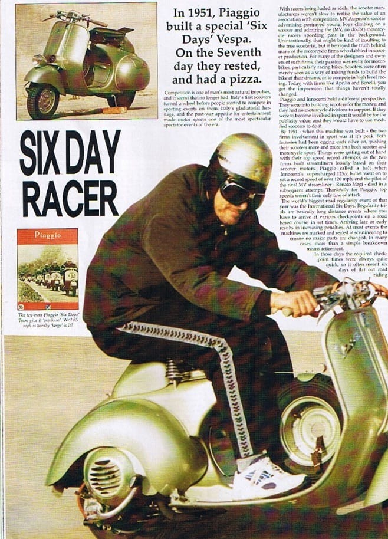
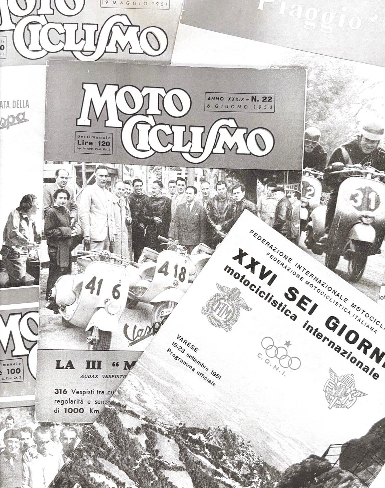

VESPA SEI GIORNI
UNA STORIA DI COMPETIZIONE
Alla fine degli anni Quaranta, la Vespa lascia le strade di tutti i giorni per misurarsi con il mondo delle competizioni. Inizia un'avventura fatta di tecnica e di sfide impegnative.
Nel 1951 arriva la sfida più importante: la Sei Giorni Motociclistica Internazionale. Dieci Vespa vengono preparate per la competizione e nove conquistano la medaglia d'oro.
Da quell'impresa nasce il nome destinato a entrare nella storia: Vespa Sei Giorni.

